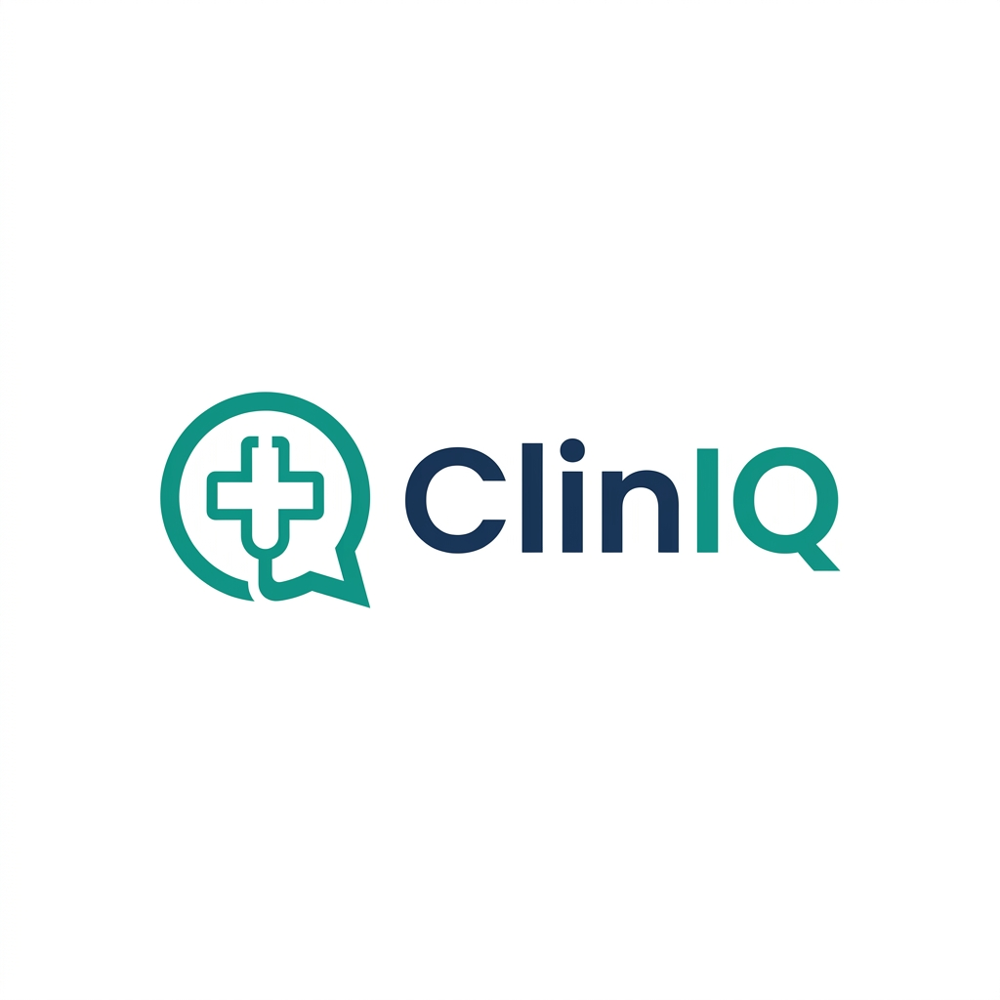

| Team Name | Vaidya Sahayak |
| Team Leader | Mayank Singh |
| Team Members | Mayank Singh, Arman Yadav, MP Nihal |
| College / University | Babu Sunder Singh Degree College, University of Lucknow |
| Selected Track | Track 3 — Reinvent Digital Public Infrastructure For Billions |
Indian government hospitals serve 4,000–10,000 OPD patients daily with 2–5 minute consultations. Doctors spend 60–70% of that time asking history instead of examining patients. India has 1 doctor per 1,511 people — every second of doctor time is critical.
The problem is worse for non-English speaking, low-literacy, elderly, and rural patients who cannot fill digital forms. AYUSH practitioners face additional complexity — Dashavidha Pariksha requires 10+ constitutional parameters that cannot be captured manually under time pressure.
ABDM has built the digital health infrastructure, but there is no patient-facing DPI application that captures structured clinical history in 22 Indian languages and feeds it into the ABDM ecosystem.
ClinIQ is an AI-powered kiosk application that conducts the entire clinical history interview autonomously, in the patient's own language, before they enter the consultation room. It produces a doctor-ready clinical summary in standard medical format.
How it works:
Key features:
| User | Pain Point | ClinIQ Impact |
|---|---|---|
| Patients (1.4B Indians) | Cannot communicate in English; low digital literacy | Voice-first interface in their own language — no typing, no forms |
| OPD Doctors (1.3M) | 60–70% of consultation spent asking history | Pre-filled structured summary — more time for examination |
| AYUSH Practitioners (8L) | Cannot capture 10+ Dashavidha parameters manually | Guided interview captures all 10 parameters automatically |
ClinIQ targets rural patients, elderly users, low-literacy populations, and non-English speakers — the billions excluded from current digital health solutions. Voice-first, audio-first design with large tap targets ensures zero digital literacy required.
| Layer | Technology |
|---|---|
| Frontend | Next.js 15 (App Router), React 19, TypeScript, Tailwind CSS, Framer Motion |
| AI — Conversation | Groq API (LLaMA 3.3 70B) — ultra-low latency for real-time interview |
| AI — Summary + OCR | Google Gemini 2.5 Flash — structured JSON generation + Vision OCR |
| Speech (DPI) | Bhashini ASR (speech-to-text) + Bhashini TTS (text-to-speech) — 22 Indian languages |
| Identity (DPI) | ABHA ID + Aadhaar OTP authentication |
| Interoperability (DPI) | FHIR R4 resource generation + ABDM Consent Framework |
| Database | Neon Serverless Postgres |
| Privacy | sessionStorage-based, DPDP Act 2023 compliant — zero PII persistence |
| Network Resilience | resilientFetch with retries, AbortSignal timeouts, triple AI fallback |
| Deployment | Vercel (Edge + Serverless Functions), PWA-ready |
What makes it unique:
Scalability: ClinIQ is a PWA — runs on any device with a browser. A hospital deploys by opening a URL on an existing tablet. Bhashini and ABDM APIs are free for public sector use, so incremental cost per deployment is near zero. Can scale from a single hospital pilot to 10,000+ PHCs/CHCs across India.
| Resource | Link |
|---|---|
| Live Demo (Deployed) | ClinIQ.mayankcodes.dev |
| GitHub Repository | github.com/mayankcodes-dev/ClinIQ |
| ABDM Documentation | abdm.gov.in |
| Bhashini API | bhashini.gov.in |
The application is fully functional — all 4 modules (Conversational History, Document OCR, Summary Generation, ABDM Integration) are implemented and deployed. The codebase compiles with 0 TypeScript errors.
| Member | Role | Contribution |
|---|---|---|
| Mayank Singh (Lead) | Full-Stack + AI | System architecture, Groq/Gemini AI engine, ABDM/ABHA integration, Bhashini ASR/TTS, API design, deployment |
| Arman Yadav | Frontend + UX | Kiosk UI, accessibility, animations, responsive design, multilingual translation system, print report styling |
| MP Nihal | Backend + Domain | Neon DB schema, FHIR R4 generation, consent framework, clinical history structure, OCR pipeline, testing |